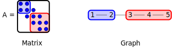

Applications of Parallel Computers
Graph partitioning
Prof David Bindel
Please click the play button below.
Sparsity and partitioning

Want to partition sparse graphs so that
Subgraphs are same size (load balance)
Cut size is minimal (minimize communication)
Uses: sparse matvec, nested dissection solves, ...
We’ve seen the notion of graph partitioning a couple times, particularly when we discussed sparse matrix computations. Remember, the nonzero pattern of a sparse matrix defines a graph; make an edge from i to j if A_ij is nonzero. The graph is undirected when the matrix A is symmetric (or at least structurally symmetric). And we might care about cutting the graph into pieces with a small number of edges cut if we want to make matrix-vector products go fast, or we want good nested dissection reorderings for sparse direct solves, or for various other reasons.
A common theme
Common idea: partition under static connectivity
Physical network design (telephone, VLSI)
Sparse matvec
Preconditioners for PDE solvers
Sparse Gaussian elimination
Data clustering
Image segmentation
Goal: Big chunks, small “surface area” between
In fact, this is a common theme across lots of areas not just in parallel scientific computing, but in the rest of computing and even in the rest of engineering. The same notion of finding good partitions of a graph comes up in problems ranging from telephone network design to image segmentation!
Graph partitioning
Given: \(G = (V,E)\) , possibly weights + coordinates.\(G\) into \(k\) pieces such that
Node weights are balanced across partitions.
Weight of cut edges is minimized.
Important special case: \(k = 2\) .
Let’s make things a little more formal. Suppose we are given a graph G with vertices V and edges E. It’s possible that we might also have weights on the edges or coordinates on the vertices. We want to partition the graph into k pieces such that the node weights are balanced across partitions and the total weight of the edges cut is as small as possible.
The important case where k = 2 is known as the graph bisection problem.
Vertex separator
I need to be a little careful, because the problem I described emphasized partitioning a graph by cutting edges. But we could also partition a graph by removing vertices (and the adjacent edges with them).
A vertex separator is a collection of nodes whose removal partitions the graph into two pieces. We’ve shown one vertex separator here (the red nodes).
Edge separator
An edge separator is a collection of edges whose removal partitions the graph. Here we’ve highlighted a collection of edges that form an edge separator.
Node to edge and back again
Can convert between node and edge separators
Node to edge: cut edges from sep to one side
Edge to node: remove nodes on one side of cut
Fine if degree bounded (e.g. near-neighbor meshes).
It’s easy enough to go back and forth between vertex and edge separators. When we are dealing with degree-bounded graphs, of the type that we often see in problems with near-neighbor connectivity in low-dimensional spaces, we can go from a nearly optimal vertex separator to a nearly optimal edge separator (or vice versa) with this mechanical transformation. But this transformation is far from optimal in social networks and other networks where there may be some very high-degree nodes.
Cost
How many partitionings are there? If \(n\) is even, \[
\begin{pmatrix} n \\ n/2 \end{pmatrix} =
\frac{n!}{( (n/2)! )^2} \approx
2^n \sqrt{2/(\pi n)}.
\] Finding the optimal one is NP-complete.
We need heuristics!
So how hard can it be to partition a graph? The number of possible even splits grows exponentially with the number of nodes in the graph, and it turns out that we don’t know any way to find the optimal partitioning in less than exponential time. It’s an NP-complete problem, and we need good heuristics! Fortunately, we have lots of good heuristics – partly because we are not usually asked to partition completely arbitrary graphs.
Partitioning with coordinates
Lots of partitioning problems from “nice” meshes
Planar meshes (maybe with regularity condition)
\(k\) -ply meshes (works for \(d > 2\) )Nice enough \(\implies\) cut \(O(n^{1-1/d})\) edges
Edges link nearby vertices
Get useful information from vertex density
Ignore edges (but can use them in later refinement)
Indeed, a lot of graph partitioning problems come from nice meshes associated with something like nearest-neighbor connectivity in low-dimensional spaces. In this case, we can cut the graph by removing O(n^(d-1)/d) edges, where d is the dimension of the space, and we can figure out the best places to cut purely by looking at how vertices are located in space.
Recursive coordinate bisection
Idea: Cut with hyperplane parallel to a coordinate axis.
Pro: Fast and simple
Con: Not always great quality
Maybe the simplest approach to partitioning when we have node coordinates is coordinate bisection. Pick a coordinate, and choose a value so that half the nodes lie on one side and half on the other. And there’s your cut! If you want more than two pieces, you can apply the idea recursively, maybe using different coordinates for different steps.
It’s a fast and simple method. Doesn’t always work that well, alas.
Inertial bisection
Idea: Optimize cutting hyperplane via vertex density \[\begin{aligned}
\bar{\mathbf{x}} &= \frac{1}{n} \sum_{i=1}^n \mathbf{x}_i, \quad
\bar{\mathbf{r}_i} = \mathbf{x}_i-\bar{\mathbf{x}} \\
\mathbf{I}&= \sum_{i=1}^n\left[ \|\mathbf{r}_i\|^2 I - \mathbf{r}_i \mathbf{r}_i^T \right]
\end{aligned}\] Let \((\lambda_n, \mathbf{n})\) be the minimal eigenpair for the inertia tensor \(\mathbf{I}\) , and choose the hyperplane through \(\bar{\mathbf{x}}\) with normal \(\mathbf{n}\) .
One problem with coordinate bisection is that the natural coordinates might not be the best ones to use in a splitting. A natural alternative is to use coordinates based on the inertia of the vertex cloud. That is, we split on a hyperplane that passes through the centroid, with a normal associated with the minimal rotational inertia for the object.
Inertial bisection
Pro: Simple, more flexible than coord planes
Con: Still restricted to hyperplanes
Here’s what inertial bisection looks like for our running example of the mutant-potato graph. In this case, it works pretty well! Indeed, it works better than coordinate planes most of the time, and is still quite simple. But the fact that we are restricted to hyperplanes can still be a problem.
Random circles (Gilbert, Miller, Teng)
Stereographic projection
Find centerpoint (any plane is an even partition)
Conformally map sphere, centerpoint to origin
Choose great circle (at random)
Undo stereographic projection
Convert circle to separator
May choose best of several random great circles.
It turns out that hyperplanes are a great idea, but if we want their full power, we need to apply them after transforming the coordinate geometry. The idea of the random circle approach is to conformally map all the points onto the surface or a sphere and partition on the sphere with a great circle. There’s an element of randomness here, but it turns out that good partitions based on this approach are plentiful enough that choosing the best of several random great circles will generally give us a good partitioning.
Coordinate-free methods
Don’t always have natural coordinates
Example: the web graph
Can add coordinates? (metric embedding)
Use edge information for geometry!
So far we’ve discussed partitioning methods where we have coordinates associated with the vertices. But what if we are only given the graph topology (or, equivalently, what if we only have a sparse matrix)? For example, perhapse we are dealing with an information network like the web graph, and there is no natural geometry. Well, we can often add coordinates just using the edge information!
Breadth-first search
Pick a start vertex \(v_0\)
Might start from several different vertices
Use BFS to label nodes by distance from \(v_0\)
We’ve seen this before – remember RCM?
Or minimize cuts locally (Karypis, Kumar)
Partition by distance from \(v_0\)
We’ve seen the first tactic for getting geometry relevant to partitioning, when we talked about reverse Cuthill-McKee and ordering for bandedness. The approach is to choose a peripheral vertex, and use BFS to label nodes by distance from that vertex. Then take the half of the nodes that are closer as one side of our partition, and the other half of the nodes as the other side. It’s not perfect, but it is again pretty good for how simple it is. There are some tweaks on this approach that traverse the graph in other ways, and these methods can work even better.
Spectral partitioning
Label vertex \(i\) with \(x_i = \pm 1\) . We want to minimize \[\mbox{edges cut} = \frac{1}{4} \sum_{(i,j) \in E} (x_i-x_j)^2\] subject to the even partition requirement \[\sum_i x_i = 0.\] But this is NP hard, so we need a trick.
Another approach, which appeals to me, involves writing the (NP-hard) discrete optimization problem as a simple-looking integer optimization with a quadratic objective and a linear constraint. If we could exactly minimize this quadratic subject to the constraint, we would be done! And the only thing that makes it hard, as it turns out, is our insistence that we label each vertex with a plus or minus 1.
Spectral partitioning
\[\mbox{edges cut}
= \frac{1}{4} \sum_{(i,j) \in E} (x_i-x_j)^2
= \frac{1}{4} \|Cx\|^2 = \frac{1}{4} x^T L x
\] where \(C=\) incidence matrix, $L = C^T C = $ graph Laplacian: \[\begin{aligned}
C_{ij} &=
\begin{cases}
1, & e_j = (i,k) \\
-1, & e_j = (k,i) \\
0, & \mbox{otherwise},
\end{cases} &
L_{ij} &=
\begin{cases}
d(i), & i = j \\
-1, & (i,j) \in E, \\
0, & \mbox{otherwise}.
\end{cases}
\end{aligned}\] Note: \(C e = 0\) (so \(L e = 0\) ), \(e = (1, 1, 1, \ldots, 1)^T\) .
Before we show the relaxation that makes this easy, let’s write the quadratic in our problem in terms of a matrix. The sum of squares of differences across edges can be taken as the two norm of Cx where C is the so called incidence matrix for which each row corresponds to an edge, with a +1 in the column for one endpoint and a -1 in the column for the other. The matrix C^T C is the so-called Graph Laplacian matrix, and what we have just shown is that we can write the edge cut as a quarter x^T L x where x is the label vector and L is the graph Laplacian.
Spectral partitioning
Now consider the relaxed problem with \(x \in \mathbb{R}^n\) : \[\mbox{minimize } x^T L x \mbox{ s.t. } x^T e = 0 \mbox{ and } x^T x = 1.\] Equivalent to finding the second-smallest eigenvalue \(\lambda_2\) and corresponding eigenvector \(x\) , also called the Fiedler vector . Partition according to sign of \(x_i\) .
How to approximate \(x\) ? Use a Krylov subspace method (Lanczos)! Expensive, but gives high-quality partitions.
Minimizing x^T L x over +/-1 vectors with mean 0 is hard. Minimizing over real vectors with mean 0 (and some other normalizing constraint) is easy! This turns into an eigenvalue problem; in fact, x is proportional to the eigenvector of L associated with the second-smallest eigenvalue. This is sometimes called the Fiedler vector.
The spectral bisection algorithm is pretty simple: compute the Fiedler vector, and use the sign of the entries to partition the nodes. The only trouble is in finding the Fiedler vector! We can use standard iterations to do this; it’s expensive, but it tends to give gold-standard partitions.
Spectral partitioning
And here’s our plot of the spectral partitioning – we’ve colored the nodes according to the Fiedler vector, where red is positive, blue is negative, and the color intensity indicates magnitude of the entry. There’s one node that is labeled very near zero; note that moving that node to one side of the partition or the other gives cuts with about equal quality.
Spectral coordinates
Alternate view: define a coordinate system with the first \(d\) non-trivial Laplacian eigenvectors.
Spectral partitioning = bisection in spectral coords
Can cluster in other ways as well (e.g. \(k\) -means)
There’s another way of thinking about spectral partitioning, too: we can think of the Fiedler vector as giving us a one-dimensional coordinate system on which we have done bisection. Indeed, there are lots of settings where people interpret the first few eigenvectors as giving node coordinates in some d-dimensional space, and this gives a useful geometry to the problem. Once we have such a geometry, coordinate bisection is only one way of using it for partitioning; we could also cluster in other ways (e.g. by using Lloyd’s algorithm, aka k-means, on the spectral node coordinates).
Spectral coordinates
And here’s the 2D layout of our example graph using spectral coordinates, with spectral bisectioning represented as coordinate bisection.
Refinement by swapping
Gain from swapping \((a,b)\) is \(D(a) + D(b) - 2w(a,b)\) , where \(D\) is external - internal edge costs: \[\begin{aligned}
D(a) &= \sum_{b' \in B} w(a,b') - \sum_{a' \in A, a' \neq a} w(a,a') \\
D(b) &= \sum_{a' \in A} w(b,a') - \sum_{b' \in B, b' \neq b} w(b,b')
\end{aligned}\]
The methods that we’ve discussed so far often give us a reasonably good partitioning. But can we take a reasonable partitioning and refine it? That is, suppose that we wanted to swap a pair (a, b), where a was in one partition and b in the other; could we make such a swap and reduce the cost of the cut? Sometimes, the answer is yes!
Greedy refinement
Start with a partition \(V = A \cup B\) and refine.
\(\operatorname{gain}(a,b) = D(a) + D(b) - 2w(a,b)\) Purely greedy strategy: until no positive gain
Choose swap with most gain
Update \(D\) in neighborhood of swap; update gains
Local minima are a problem.
When we can make a swap that reduces the cut, why not do it? It turns out that this purely greedy strategy works as far as it goes, but it often doesn’t go so far – it tends to get stuck in local minima.
Kernighan-Lin
In one sweep, while no vertices marked
Choose \((a,b)\) with greatest gain
Update \(D(v)\) for all unmarked \(v\) as if \((a,b)\) were swapped
Mark \(a\) and \(b\) (but don’t swap)
Find \(j\) such that swaps \(1, \ldots, j\) yield maximal gain
Apply swaps \(1, \ldots, j\)
The Kernighan-Lin algorithm is just a little bit smarter than the greedy approach. Instead of immediately taking a swap, we consider a bunch of possible swaps and then take those that yield the greatest improvement.
Kernighan-Lin
Usually converges in a few (2-6) sweeps. Each sweep is \(O(|V|^3)\) . Can be improved to \(O(|E|)\) (Fiduccia, Mattheyses).
Further improvements (Karypis, Kumar): only consider vertices on boundary, don’t complete full sweep.
The Kernighan-Lin approach usually converges in very few sweeps. Each sweep is O(|V|^3) when we implement it naively, but that time can be reduced to O(|E|). There have been further improvements by Karypis and Kumar that involve only considering boundary vertices for swaps rather than looking at everything.
Multilevel ideas
Basic idea (same will work in other contexts):
Coarsen
Solve coarse problem
Interpolate (and possibly refine)
May apply recursively.
For big graphs, we may not want to just directly apply a partitioning scheme or a refinement scheme like Kernighan-Lin. Instead, we’d like to apply these schemes to a coarser graph that captures the general geometry of the original problem (and then maybe refine the resulting partition). This gives us a “multilevel” approach.
Maximal matching
One idea for coarsening: maximal matchings
Matching of \(G = (V,E)\) is \(E_m \subset E\) with no common vertices.Maximal : cannot add edges and remain matching.Constructed by an obvious greedy algorithm.
Maximal matchings are non-unique; some may be preferable to others (e.g. choose heavy edges first).
One very natural way to coarsen is using a maximal matching. The idea of a maximal matching is that we choose a set of edges with no vertices in common, and then lump together the endpoints with each other. This is very non-unique, but sometimes one matching is preferable to another (e..g we want to choose heavy edges first).
Coarsening via maximal matching
Collapse matched nodes into coarse nodes
Add all edge weights between coarse nodes
Once we have a matching, we can coarsen the graph by collapsing the matched nodes, and adding up all the edge weights from the fine graph to get new weights in the coarse graph.
Software
All these use some flavor(s) of multilevel:
METIS/ParMETIS (Kapyris)
PARTY (U. Paderborn)
Chaco (Sandia)
Scotch (INRIA)
Jostle (now commercialized)
Zoltan (Sandia)
There are lots of codes out there that use these multilevel partitioning ideas together with Kernighan-Lin refinement and perhaps some other partitioner. The one that I have used most is Kapyris’s METIS code, which is a multilevel Kernighan-Lin partitioner, but there are plenty of choices.
Graph partitioning: Is this it?
Consider partitioning just for sparse matvec:
Edge cuts \(\neq\) communication volume
Should we minimize max communication volume?
Communication volume – what about latencies?
Some go beyond graph partitioning (e.g. hypergraph in Zoltan).
Some of these partitioners are actually smart, and go beyond just graph partitioning. After all, I have argued that sometimes edge cuts correspond to communication volume, and minimizing communication volume is good – but you should know at this point that message counts (latencies) matter as much as message sizes (bandwidths) in many cases! Partitioners like Zoltan try to capture some more complicated measures of partitioning quality in terms of a hypergraph partitioning problem rather than a graph partitioning.
Graph partitioning: Is this it?
Additional work on:
Partitioning power law graphs
Covering sets with small overlaps
Also: Classes of graphs with no small cuts (expanders)
There has also been work on different classes of graphs that show up a lot in the analysis of social and “small world” networks, and methods that try to cover a graph with small overlaps but allow some redundancy (i.e. the nodes are not partitioned into disjoint sets).
Graph partitioning: Is this it?
Recall: partitioning for matvec and preconditioner
Block Jacobi (or Schwarz) – relax on each partition
Want to consider edge cuts and physics
E.g. consider edges = beams
Cutting a stiff beam worse than a flexible beam?
Doesn’t show up from just the topology
Multiple ways to deal with this
Encode physics via edge weights?
Partition geometrically?
Tradeoffs are why we need to be informed users
Sometimes, too, the graph doesn’t tell the whole picture. If we’re partitioning for preconditioning with a block Jacobi method, for example, we would much rather cut “floppy” edges than “stiff” edges. It’s not like this can’t be captured by the methods we’ve discussed; for example, we can encode notions of stiffness or floppiness in the edge weights, giving greater penalty for cutting stiff edges. But we have to know what we care about in order to get the right encoding. And the fact that tradeoffs like this exist is the reason that I’m telling you about a lot of this stuff rather! We need enformed users to be able to set up our partitioning problems in an appropriate way.
Graph partitioning: Is this it?
So far, considered problems with static interactions
What about particle simulations?
Or what about tree searches?
Or what about...?
Next time: more general load balancing issues
Finally, the overview of graph partitioning in this slide deck might cover lots of problems with mostly static interactions, but what about problems where the interactions are changing over time? For example, nearest-neighbor interactions between moving particles are constantly shifting; does a static partitioning make sense there? Well, maybe it makes sense as a starting point, but we will need more ideas after that. And we will pick up some of these ideas next time when we discuss more general load balancing issues.